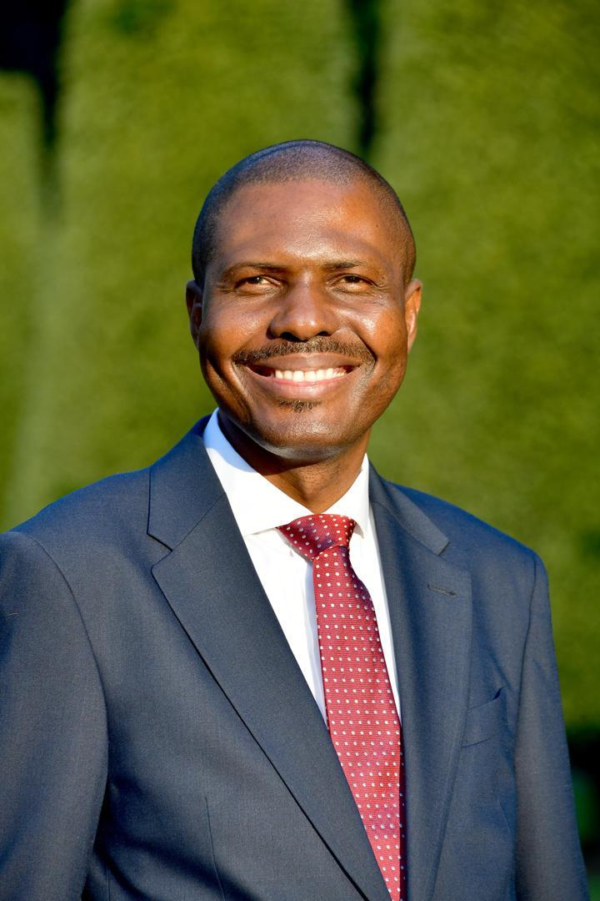

By Daniel Edah · Founder & President · U.S.–Africa Allies Foundation

Founder · President · Convener
Born on the African continent and educated in the United States, Daniel Edah has spent his career at the intersection of international development, diplomacy, and private enterprise. He founded the U.S.–Africa Allies Foundation in 2026 to give that work a permanent institutional home.
— The Letter —
When I was asked, late one evening in Washington, why I was building yet another foundation in a city already crowded with them, my answer surprised even me. I said: because the relationship between my two homes deserves an institution, and not a series of conferences.
I was born on the African continent. I have made my professional life in the United States. For twenty years I have watched the conversation between these two places be carried by goodwill, by personal relationships, by the occasional summit, by aid budgets that arrive in answer to crises already underway. Goodwill is an excellent thing in a friendship. It is not a strategy.
Africa, by mid-century, will hold one in four of the world's working-age people. Its cities will be among the world's largest, its consumer markets among the world's most consequential, its political weight in any room — the United Nations, the G20, the climate negotiations — impossible to outvote. The United States has built no coherent posture for any of this. The foundation I am building exists to answer that omission.
We will convene. The plain, patient, repeated work of putting American and African leaders in the same room, on serious terms, around named questions of mutual consequence. We will do it with heads of state, with legislators on both sides, with ambassadors and ministers, with university presidents and CEOs and civil-society leaders. We will do it in Washington, in African capitals, in places that belong to neither.
We will publish. The work of convening is wasted if it produces nothing durable. So we will commission and publish white papers, joint statements, and policy briefs developed with the best minds on both continents — open to the working press, cited by working governments.
We will mobilize the diaspora. The African diaspora in the United States is one of the most consequential constituencies in American civic life — and the least organized around the work of its homelands. We will give it a deliberate home.
And we will invest in the next generation. Through fellowships, exchanges, and scholarships, we will place rising American and African leaders in deliberate proximity — early, and for long enough that it matters by the time they are running things.
We will not be a charity. The instinct to read this work as benevolence is exactly the instinct we are here to correct. The partnership between the United States and Africa is owed in both directions, and the Foundation will treat it that way in every program we run.
We will not be a vehicle for any single party, administration, or ideology. The work is generational. The institutions that have endured in American life are the ones that outlasted the cycles, and we mean to be one of them.
And we will not be small about our ambitions. The window for building this matters most in the next decade. We intend to use it.
If the work I have described sounds like work you have been waiting for, I would be honored to have you join it. Read the strategic plan. Examine the programs. Consider becoming a founding member, a partner institution, an underwriter, a fellow. Write to me directly if it would help.
This is not a finished document. It is a beginning. With your help — with the right rooms, the right voices, the right patience — it will become the institution this relationship has long deserved.
Yours in the work,
Daniel Edah
Founder & President · Washington · MMXXVI